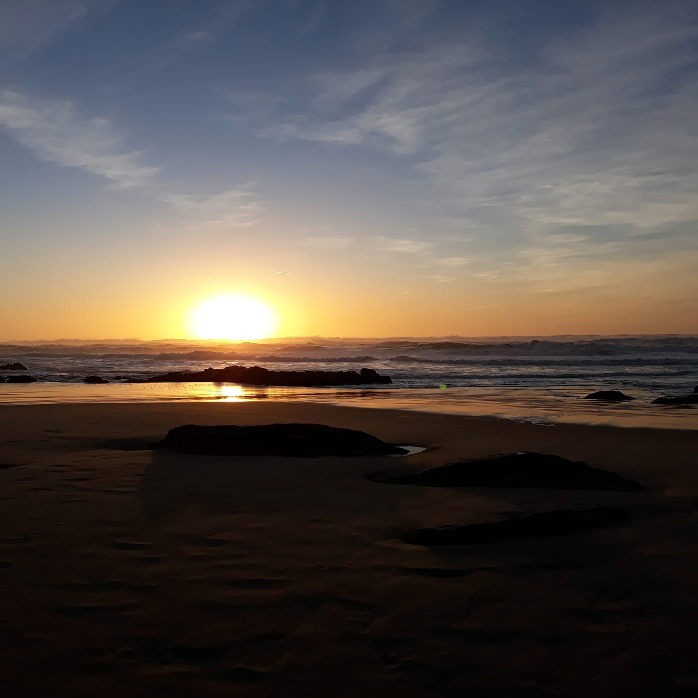
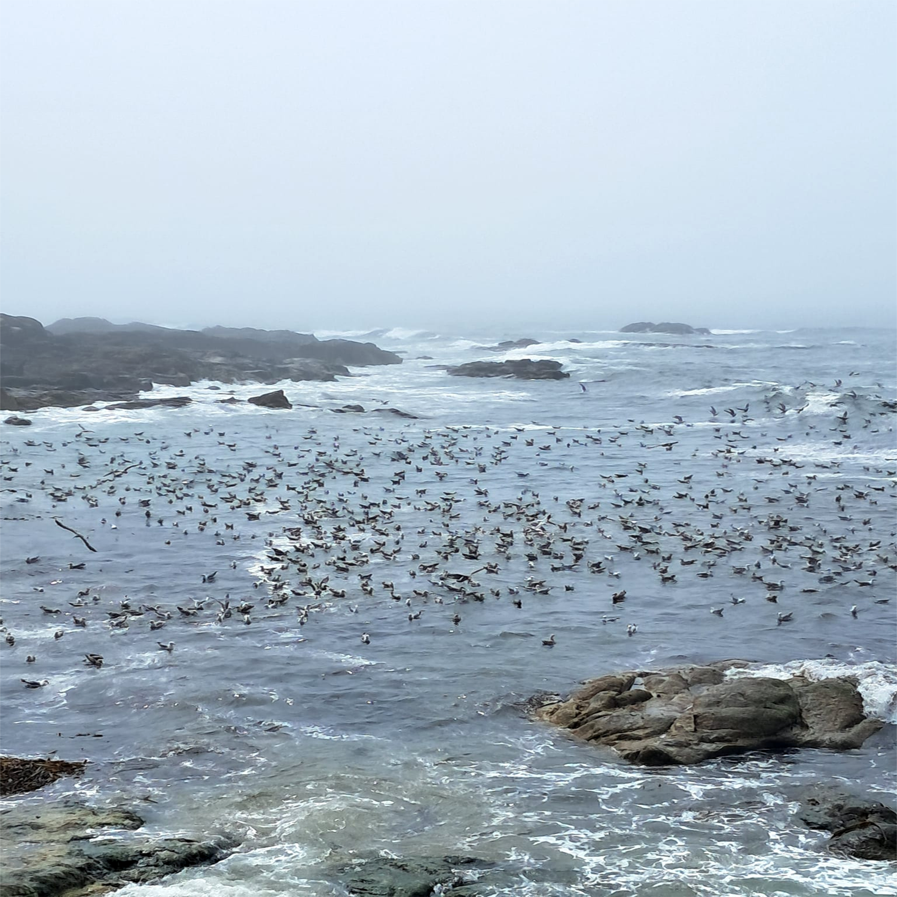
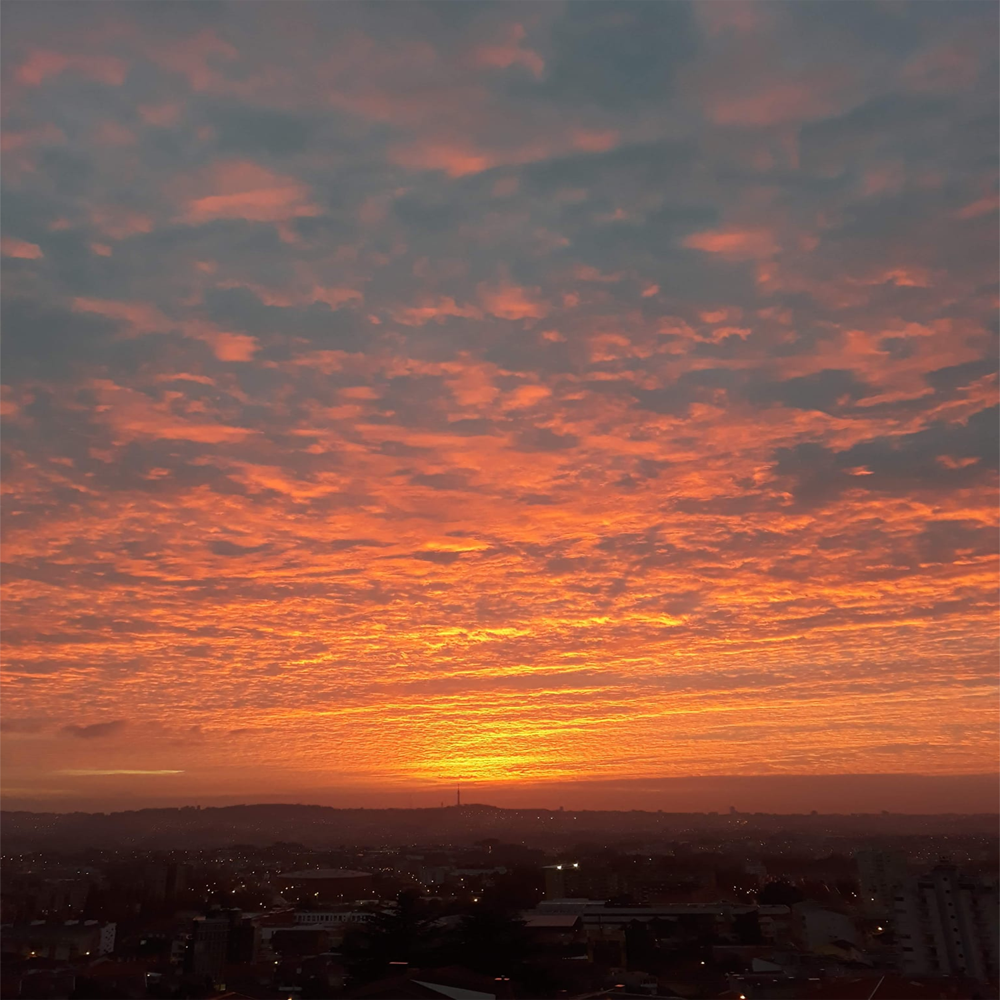
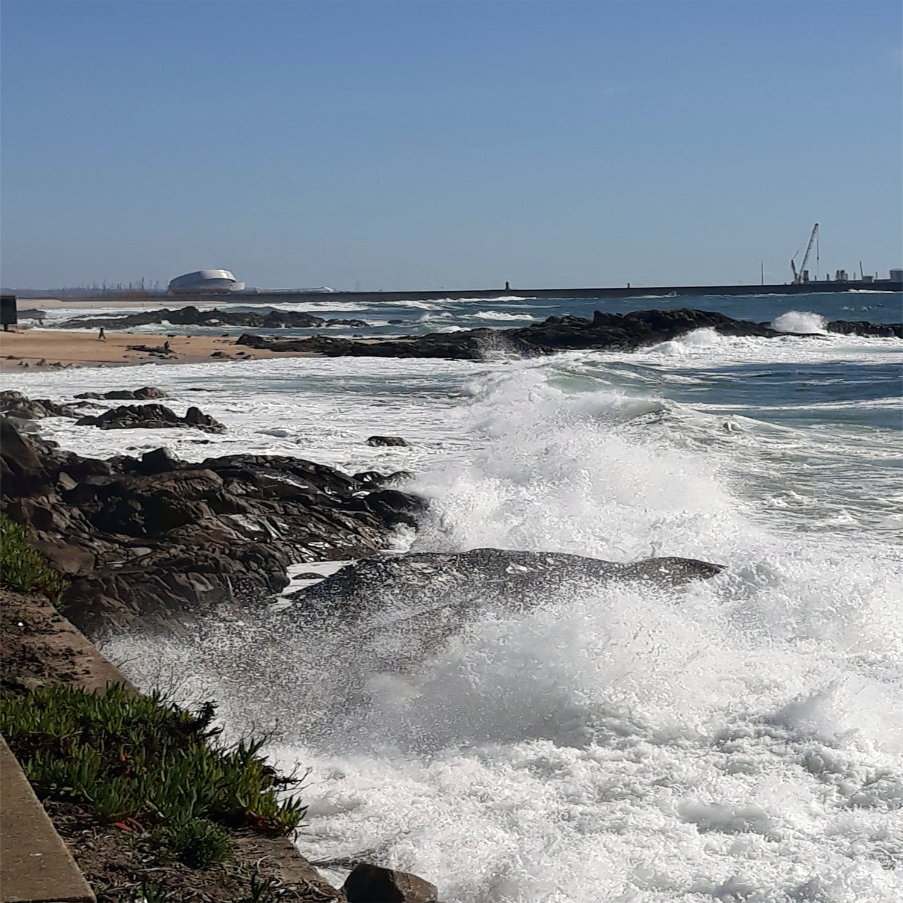
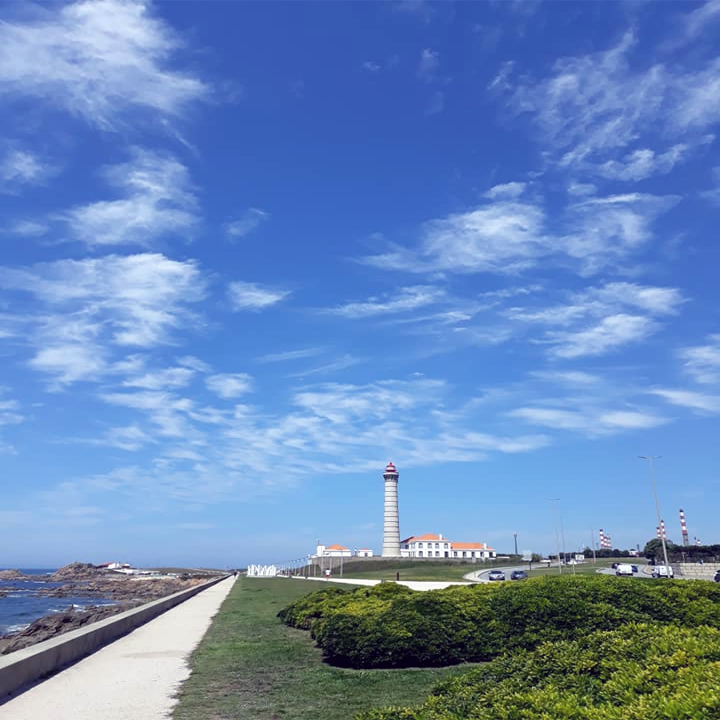
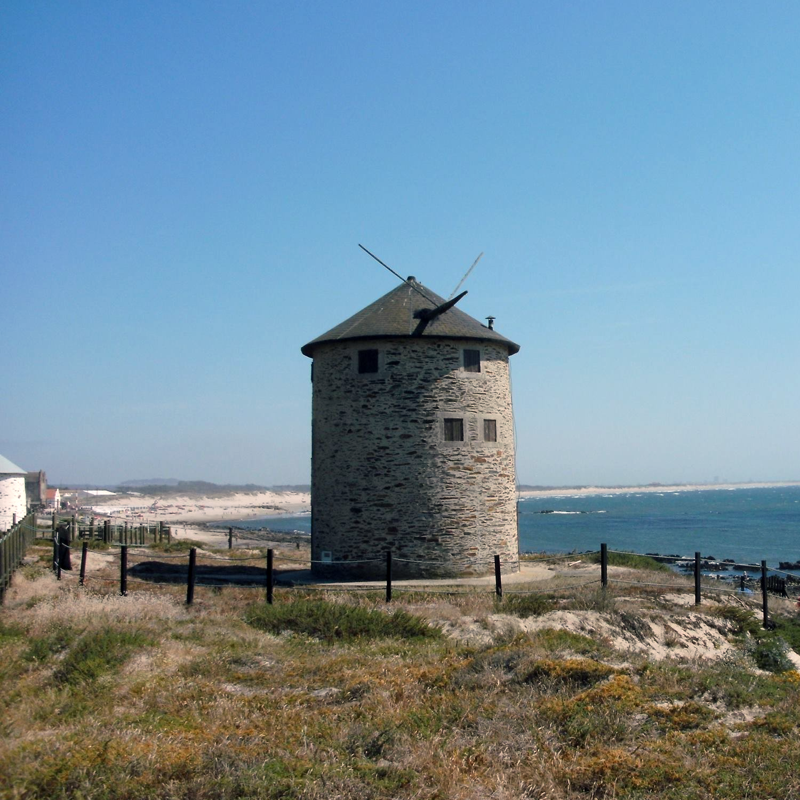
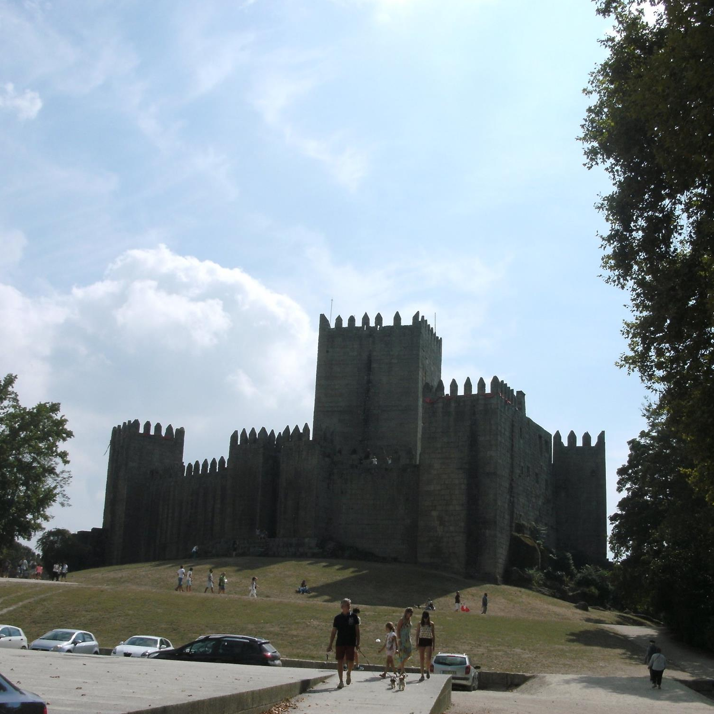
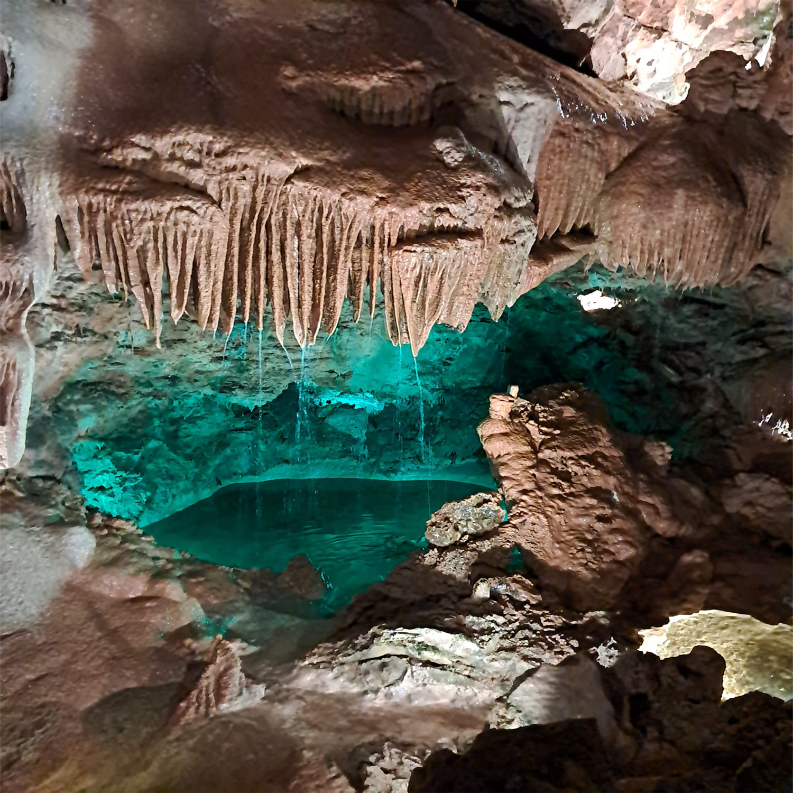

Hello, I'm Nelson. I live in Portugal and some of my favorite hobbies are playing chess, building puzzles, simracing, and walking outdoors.
In the next photo gallery I share with you some photos taken during my walks.

Sunset on Leça da Palmeira beach.

Many seagulls resting on the sea in Leça da Palmeira.

Beautiful sunset with orange clouds seen from Gondomar.

Sea waves crashing against the rocks near the promenade in Leça da Palmeira.

Boa Nova Lighthouse near the promenade under a beautiful blue sky in Leça da Palmeira.A starfish rests on top of a small rock on Praia do Aterro beach, in Leça da Palmeira.

A windmill on the coast under a clear blue sky in Apúlia, Esposende.

Castle over 1000 years old in the city of Guimarães, considered the birthplace of Portugal.

Stalactites in the Grutas de Mira de Aire cave, the largest tourist cave in Portugal.